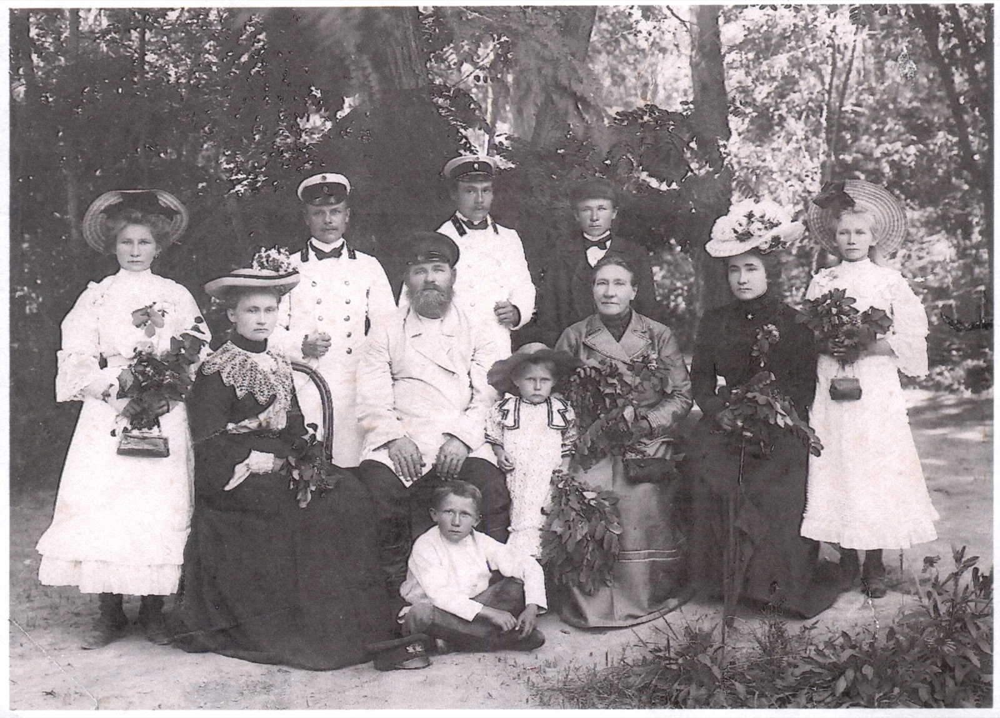

Lichtbilder · 1911
Большая семья позирует в городском парке Джаркента, 1911 год.

Слева направо: Ольга, Мария, муж Марии, Никита Фёдорович, муж Надежды Василий, дочь Марии Маруся, Иван, Мария Кирилловна, Надежда, Клавдия; на земле сидит Коля. 1911 г.
Находка: pgonchar (форум ВГД) — ссылка на сообщение.
История семьи
Родился в 1858 году. Точное место рождения не известно — по устным семейным преданиям, где-то на Волге. Русский, казак Семиреченского казачьего войска.
Женился единожды, 15 февраля 1878 года, на Марии Кирилловне Анкудиновой — из семьи молокан, вернувшихся в лоно православной церкви. У них родилось двенадцать детей, шестеро умерли в младенчестве. По данным метрических книг:
По архивным документам семья жила в станице Саркандской (февраль 1878 — ноябрь 1883), затем в Хоргосе — казачьем выселке на границе с Китаем (апрель 1884 — июль 1892), а с июня 1893 по 1900 год — в станице Голубевской (Борохудзир). Где Никита Фёдорович жил между 1884 и 1912 годом, с уверенностью установить не удалось.
Никита Фёдорович владел в станице Голубевской кожевенным заводом: он упомянут как его владелец в Памятной книге и адрес-календаре Семиреченской области за 1898 и 1905 годы — с 7 работниками и годовым оборотом в 5000 рублей, что ставило завод в крепкие «середнячки» среди подобных предприятий уезда. Брат его жены, Николай Кириллович Анкудинов, мещанин г. Джаркента, владел другим кожевенным заводом в тех же местах.
Реконструкция биографии по метрическим книгам и памятным книжкам Семиреченской области — исследование pgonchar, форум ВГД: биография, о заводе.